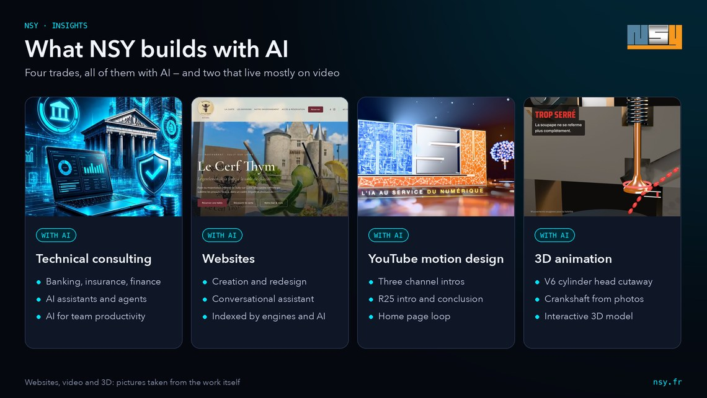
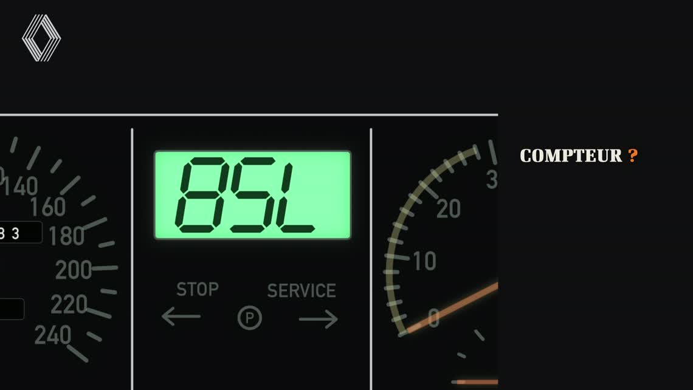
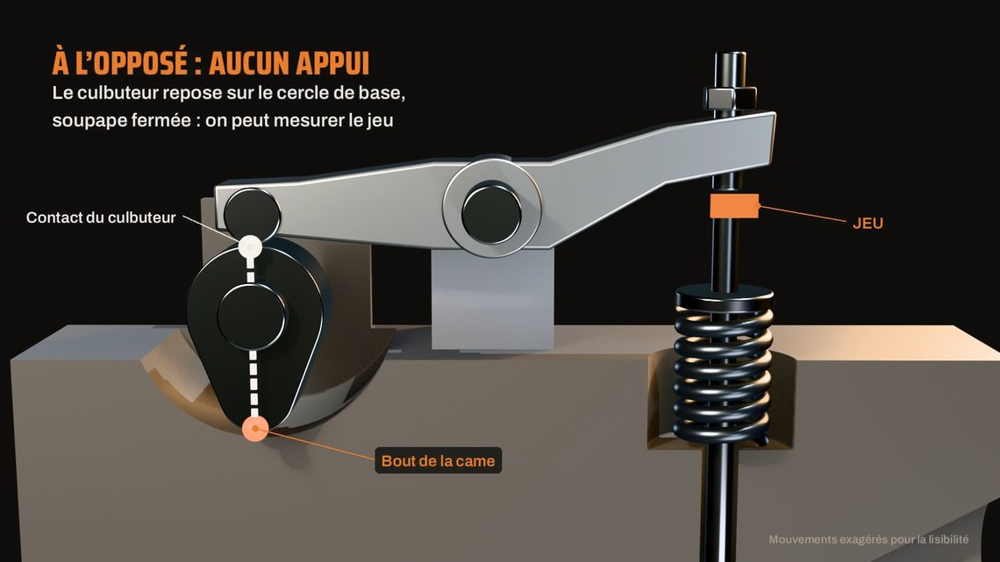
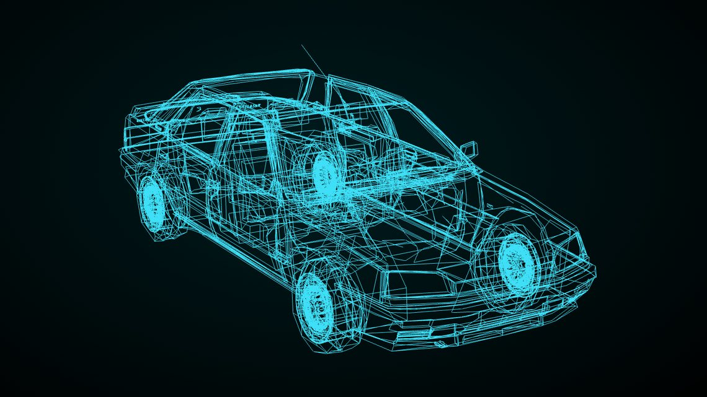

Not just websites:
what NSY builds with AI
People know us for websites designed with AI. That is part of the job, not the whole job. In October and November, the workshop delivered video and 3D: three YouTube channel intros, including NSY's own, the intro and conclusion of a video about an R25 Limousine, a cutaway V6 cylinder head animated in 3D for a fifteen-minute film, and a crankshaft modelled from three photos. All four of our offers now go through AI, and two of them live mostly on video.

Four trades, all of them with AI
NSY has provided senior technical consulting to banking and insurance since 2018: architecture, Java EE migration, WildFly, production monitoring. AI has come in here too, in two ways. On assignment, it serves the teams' productivity. In business applications, it gets built in: a language model becomes a document assistant that cites its sources, or a tool-using agent with tightly bounded actions, integrated with the same rigour as a critical component, costs, quotas and confidentiality included.
Alongside, three services put AI to work for your digital presence: website creation, motion design for YouTube and 3D animation. The website remains the most visible of the three, because it is online and people visit it. The other two are less visible, because they live inside other people's videos. They are what this article is about.
Channel intros and outros
A channel intro lasts twelve to fourteen seconds. It has to say who is speaking, and make people want to stay.
“Le V à 90°” (“The 90° V”), for PRV Concept. The association devoted to the PRV V6 engine wanted an intro that tells the story of its engine. It lasts 14 seconds, in 4K at 60 frames per second. A crankshaft is drawn in wireframe, turns into steel, spins, then shows its face, which becomes the disc of the logo. An orchestra in B minor carries the whole piece, and the ending rides on the real revving of a V6. In full transparency: PRV Concept is the association chaired by NSY's founder. It is our laboratory, where the method is proven before it is offered to a client.
“Zick'Family en camping-car”, the first client. Nicolas Zickgraf helps people buy and sell motorhomes on his YouTube channel. His intro shows a motorhome born from a pencil stroke, piece by piece, taking a mountain road, and coming to rest inside his logo. The motorhome and the family dog were generated in 3D by an AI, from the logo and photos, then cut into pieces and animated with a line-drawing render. The logo itself is the client's own file: it was never redrawn. He was offered three musical treatments and chose his own. He left a five-star review on Google.
An intro and a conclusion for an R25 Limousine. For one of Nicolas's videos, devoted to the electronics of the Renault 25 Limousine, the workshop produced an 18-second intro and a 26-second conclusion with its YouTube end screen. The Renault diamond is drawn stripe by stripe, the instrument cluster lights up, the faults to fix appear one by one. The car speaks with its own voice synthesiser, and the music is tuned to its chime: the reference pitch was set to 453 Hz so that both sound in tune together.


“La forge”, our own. NSY's intro lasts 12 seconds, in 4K at 60 frames per second, in a single continuous shot. It opens just above a circuit board in relief, where the current races towards the centre. A brain made of neurons rises from its chip and strikes the board with lightning. At the great flash, the centre melts, and the logo rises from the molten metal, letter by letter, then takes shape: a cooling front climbs from the base to the top and reveals the real materials, the blue circuit of the N, the steel of the S, the orange network of the Y. The current then follows the 511 tracks of the N's circuit, and the 237 neurons of the Y drift and reconnect. The motto, “L'IA au service du numérique” (AI at the service of digital), is written last: a pulse runs along the line, and each letter sets, white-hot, in a shower of welding sparks. The letters are the pieces of the 2018 master logo file; the molten metal is only a copy of them, which becomes sharp again as it takes shape. The music, in A minor at 120 beats per minute, is played by real sampled instruments (strings, horns, trombones, percussion), with one gesture per beat. The 4K render took just under nine hours of computing, and a six-second short version was cut from it without re-rendering anything.
The end of “La forge” also loops at the heart of the nsy.fr home page. For a loop to go unnoticed, it is not enough to put the end back to back with the beginning: everything that moves — the current, the neurons, the brain, the dust, the reflection, the camera — has been set to return exactly to its place after 7.5 seconds. The last frame flows into the first to the pixel, and the video weighs 1.3 MB.
An outro is not an intro played backwards. It leaves room for the elements YouTube overlays at the end of a video, two thumbnails and a subscribe button, for at least five seconds. The animation draws those slots, so that nothing lands by chance.
3D that explains
3D is not there to look pretty. It shows what a camera cannot film.
A cylinder head in cutaway. The film on adjusting the rockers of an R25 V6 Turbo, shot with Zick'Family and PRV Concept, had to explain what happens inside the engine. The workshop modelled a cutaway cylinder head: the camshaft and the egg-shaped profile of its cam, the rocker, its adjusting screw and lock nut, the valve, its spring and its seat. Two animations came out of it.
- “Trop serré ou trop lâche ?” (Too tight or too loose?) shows, in two minutes, what happens to the valve depending on the clearance left at the rocker. Too tight, it no longer closes on its seat. Too loose, the rocker strikes it on every turn, and that is the ticking you hear with the engine running. It was re-timed to the voice-over, beat by beat.
- “Position de la came” (Cam position) follows the motion from the raised wheel up to the camshaft, through the driveshaft, the gearbox, the crankshaft and the belt. It explains why, with the wheel raised and a gear engaged, you turn the wheel to bring each cam into position.


A crankshaft from photos. The one in PRV Concept's intro is a real second-generation PRV V6 crankshaft, modelled from three photos of the part: four main journals, three pairs of crankpins offset by 30°, the counterweights, the flywheel flange. An enthusiast of the engine recognises it at first glance, and that is the point.

The R25, our testing ground
The Renault 25 is the workshop's common thread. A 4K R25 Baccara V6 Turbo plays as a Short on NSY's channel. On the website, the same car can be handled in wireframe in the browser: 163 parts of the model were merged, simplified and converted into lines, so that visitors can spin it without slowing the page down. It demonstrates what we offer a brand: a product you can get your hands on before you buy it.

What AI does, and what it doesn't
AI speeds up three things. It generates a 3D model from an image, when the exact dimensions are not needed. It writes the scripts that build each shot, so an intro can be rebuilt with a single command after a tweak. It adapts a video to 16:9 and to vertical without redoing everything.
It does not do the rest. A client's logo is never redrawn by an AI: it starts from their file, cut into exact pieces. Every gesture lands on a beat of the music, written in advance in a score. Every keyframe is checked before the final render. And a mechanical part is modelled from the real part: a wrong crankshaft shows at once, to the very people it is meant for.
And websites?
They remain at the heart of the offer, whether creation or redesign, with a conversational assistant grounded in your content and search visibility designed for engines as well as for AI assistants. Le Cerf Thym and PRV Concept are examples. But a brand also lives on YouTube, on social media, in a demo video or in a product you spin on screen. Same standards, different medium.
An intro or an outro for your channel, a part or a product to animate in 3D, a logo to bring into volume: describe your project and we will get back to you within 48 business hours with a scoping proposal. The work can be seen on the dedicated page, on video.